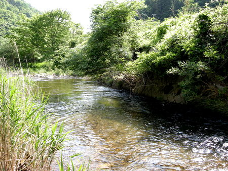
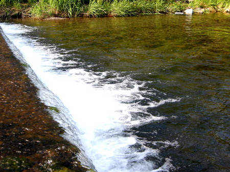
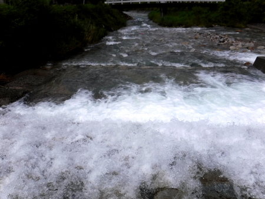
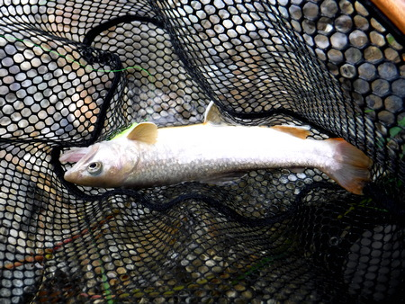

ティップス
魚を掛けてから 飛び降り、ジャンプにご用心
僕は渓流釣りをしている時に、だいたい心根が横着なので、
- 土手の上
- 岸辺に設けられた護岸やコンクリートブロック
- 川沿いの用水路の縁のコンクリート
- 流れの中の大石
- 堰堤のコンクリート天端
などの上に立ってキャストすることが、よくあります。



視点が高くなって、フライやルアーの動き、魚の反応も良く見えるので、頻繁に行ってしまいます。魚からも自分の姿を見られやすくなるというリスクがあるにもかかわらず、ですが。
ところが問題は、魚が掛かった時に、引っこ抜いてネットに入れられるようなサイズならどうってことはないのですが、もしも、
『うわ！ こりゃデカい！！』
などという大物が掛かるととても困ります。

そうなった時に、立ち位置から下までがあまり高くなく、着地点が草や砂地で安全な場合には、「エイヤっ！」と、飛び降りたくなるかもしれません。
あるいは、こちら岸ではどうしてもランディングできる場所がなく、やむを得ず対岸へ渉ろうと、石から石へと飛び移ることを試みたくなる場合もあるでしょう。
しかし、ファイトの最中の、飛び降りやジャンプは止めましょう。飛び降りた時、一瞬ロッドティップがブレて（おそらく下方、魚の方向へ）、ラインのテンションが失われ、せっかくの大物をバラしてしまう可能性が高いです。（経験者は、泣く泣く語る....）
立っている場所から下までが高くても低くても、魚が掛かったら、安心してファイトして、確実に取り込める場所まで、慎重に降りることを強くお勧めします。
また、対岸へ移らなければならない時には、石伝いに飛ばずに、流れの底まで降りて足を着き、ラインのテンションを緩めないよう慎重に、気を付けながら移動すると良いでしょう。
大学時代、新潟の川のとある大淵で、テンカラで掛けた尺ヤマメとファイトしている最中に、こちら側は切り立った岩盤で、どうしてもネットですくうことができませんでした。幸いにも、淵の流れ込みの幅が狭く、何とか飛び移れそうだったので、それまでにこんなシチュエーションで何度も煮え湯を飲まされたことを思い出し、竿を高く掲げ、なるべく着地のショックが少なくなるように、膝のクッションを効かせて恐る恐る飛び移ったことを思い出します。対岸で何とかランディングして、ネットの中に横たわって大きく息をついていた銀色の鱗が、今でも目に浮かびます。
老婆心ながら、アドバイスさせていただきました。でも、肝心なことは、今は亡き僕の父の言ったとおり、
『ポイントにキャストする前に、どこで取り込むかをよく考えておけ』
ということに尽きるでしょう。
ティップス 目次へ
サイトマップ
ホームへ
お問い合わせ